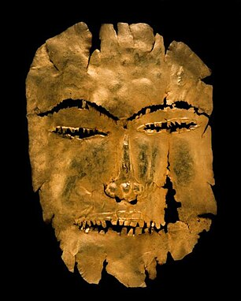
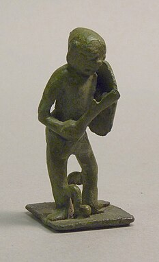
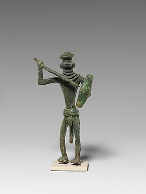
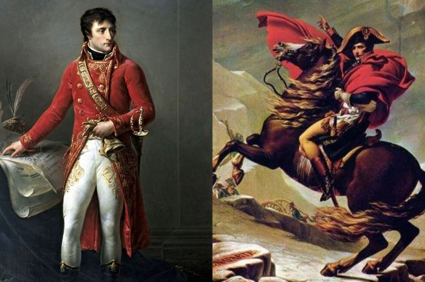
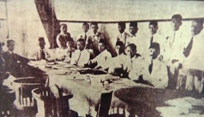
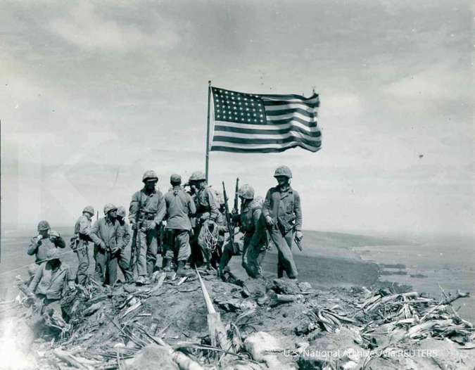
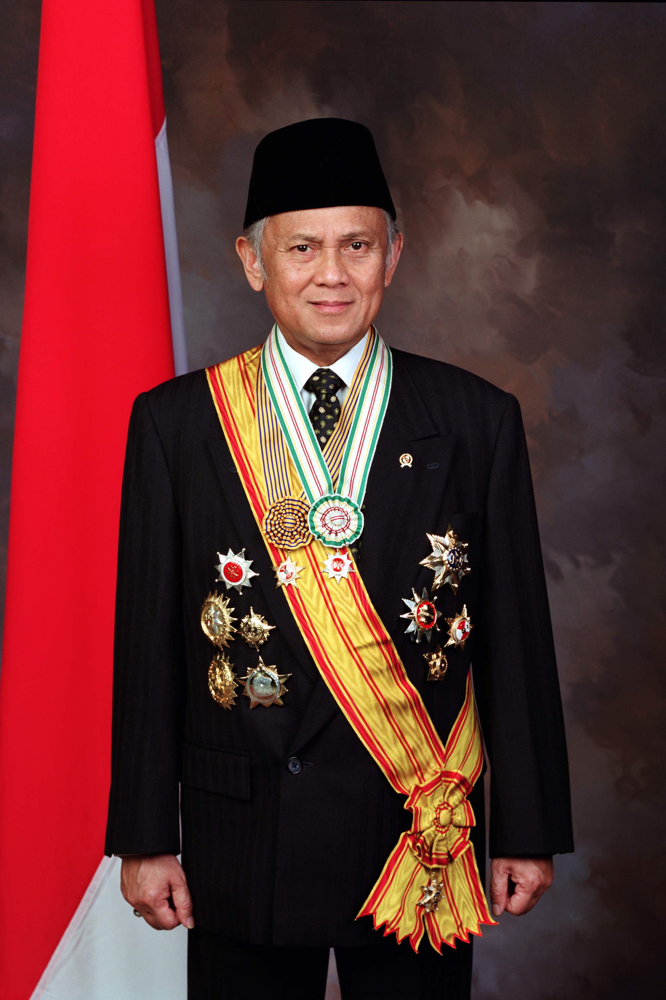
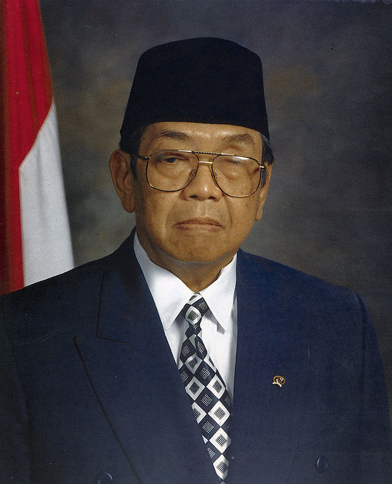
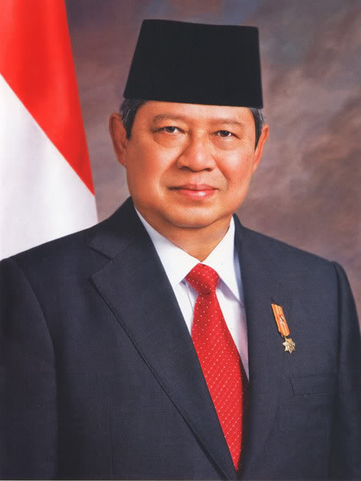

Sejarah Indonesia meliputi suatu rentang waktu yang sangat panjang yang dimulai sejak zaman prasejarah berdasarkan penemuan "Manusia Jawa" yang berusia 1,7 juta tahun yang lalu. Periode sejarah Indonesia dapat dibagi menjadi lima era: Era Prakolonial/Era kerajaan, saat munculnya kerajaan-kerajaan Hindu-Buddha dan Islam di Jawa, Sumatra, dan Kalimantan yang sangat mengandalkan perdagangan; Era Kolonial, masuknya orang-orang Eropa (terutama Belanda, Portugis, dan Spanyol) yang menginginkan rempah-rempah mengakibatkan penjajahan oleh Belanda selama sekitar 350 tahun antara awal abad ke-17 hingga pertengahan abad ke-20; Era Kemerdekaan Awal, pasca-Proklamasi Kemerdekaan Indonesia (1945) sampai jatuhnya Soekarno (1966); Era Orde Baru, 32 tahun masa pemerintahan Soeharto (1966–1998); serta Era Orde Reformasi yang berlangsung sampai sekarang.
Sejarah Awal



Para cendekiawan India telah menulis tentang Dwipantara atau kerajaan Hindu Jawa Dwipa di Pulau Jawa dan Sumatra atau Swarna Dwipa sekitar 200 SM. Bukti fisik awal yang menyebutkan mengenai adanya empat kerajaan bercorak Hinduisme pada abad ke-1 dan abad ke-5, yaitu Kerajaan Salakanagara yang berdiri di Jawa Barat sekitar tahun 130 M atau abad ke-1 sementara Kerajaan Kandis di Sumatra dan kerajaan kerajaan pada abad ke-4 sampai abad ke-5 mulai muncul seperti Kerajaan Tarumanagara yang menguasai Jawa Barat dan Kerajaan Kutai di pesisir Sungai Mahakam, Kalimantan. Pada tahun 425 ajaran Buddhisme telah mencapai wilayah tersebut.
Nusantara telah mempunyai warisan peradaban berusia ratusan tahun dengan dua kekaisaran besar, yaitu Sriwijaya di Sumatra pada abad ke-7 hingga 14 dan Majapahit di Jawa pada abad ke-13 sampai 16, ditambah dengan puluhan kerajaan kecil yang seringkali menjadi vassal tetangganya yang lebih kuat atau saling terhubung dalam semacam ikatan perkawinan dan perdagangan (seperti di Maluku). Hal tersebut telah terjadi sebelum Eropa Barat mengalami masa Renaisans pada abad ke-16.
Era Kolonial
Afonso de Albuquerque, seorang tokoh yang membuat kawasan Nusantara waktu itu dikenal oleh orang Eropa dan dimulainya kolonisasi oleh Portugis bersama dengan bangsa Eropa lain, terutama Britania dan Belanda, juga Spanyol dalam waktu yang singkat.
Dari Sungai Tajo yang bermuara ke Samudra Atlantik itulah armada Portugis mengarungi Samudra Atlantik, yang memakan waktu sebulan hingga tiga bulan, melewati Tanjung Harapan di Afrika, menuju Selat Malaka. Dari sini penjelajahan dilanjutkan ke Kepulauan Maluku untuk mencari rempah-rempah, komoditas yang setara emas kala itu.
"Pada abad ke-16 saat petualangan itu dimulai biasanya para pelaut negeri Katolik itu diberkati oleh pastor dan raja sebelum berlayar melalui Sungai Tagus,” kata Teresa. Biara St Jeronimus (Portugis: Mosteiro Dos Jeronimos) didirikan oleh Raja Manuel I pada tahun 1502 di tempat saat Vasco da Gama memulai petualangan ke timur.
Museum Maritim (Portugis: Museu de Marinha) didirikan oleh Raja Luis I pada 22 Juli 1863 untuk mengenang sejarah maritim Portugis.
Selain patung di taman, lukisan Afonso de Albuquerque juga menjadi koleksi museum itu. Di bawah lukisan itu tertulis, ”Gubernur India 1509-1515. Peletak dasar Kerajaan Portugis di India yang berbasis di Ormuz, Goa, dan Malaka. Pionir kebijakan kekuatan laut sebagai kekuatan sentral kerajaan”. Berbagai barang perdagangan Portugis juga dipamerkan di museum itu, bahkan gundukan lada atau merica.
Ada sejumlah motivasi mengapa Kerajaan Portugis memulai petualangan ke timur. Ahli sejarah dan arkeologi Islam Uka Tjandrasasmita dalam buku Indonesia-Portugal: Five Hundred Years of Historical Relationship (Cepesa, 2002), mengutip sejumlah ahli sejarah, menyebutkan tidak hanya ada satu motivasi Kerajaan Portugis datang ke Asia. Ekspansi itu mungkin dapat diringkas dalam tiga kata bahasa Portugis, yakni Feitoria, Fortaleza, dan Igreja (mirip seperti kata Gold, Glory, Gospel). Arti harfiahnya adalah emas, kejayaan, dan gereja atau perdagangan, dominasi militer, dan penyebaran agama Katolik.
Menurut Uka, Albuquerque, Gubernur Portugis Kedua dari India Portugis, Kerajaan Portugis di Asia, merupakan arsitek utama ekspansi Portugis ke Asia. Dari Goa, ia memimpin langsung ekspedisi ke Malaka dan tiba di sana awal Juli 1511 membawa 15 kapal besar dan kecil serta 600 tentara. Ia dan pasukannya mengalahkan armada Malaka pada 10 Agustus 1511. Sejak itu Portugis menguasai perdagangan rempah-rempah dari Asia ke Eropa. Setelah menguasai Malaka, ekspedisi Portugis yang dipimpin Antonio de Abreu mencapai Maluku, pusat rempah-rempah.
Periode kolonisasi Portugis di Nusantara
Sekitar tahun 1511-1526, Nusantara menjadi pelabuhan maritim penting bagi Kerajaan Portugis, yang secara reguler menjadi rute maritim untuk menuju Pulau Sumatra, Jawa, Banda, dan Maluku.
Pada tahun 1511 Portugis berhasil mengalahkan Kerajaan Malaka. Lalu pada tahun 1522, Portugis sudah sampai di Pelabuhan Sunda untuk menandatangani perjanjian dagang dengan Raja Sunda. Perjanjian dagang tersebut dilakukan pada tanggal 21 Agustus 1522. Pada hari yang sama dibangun sebuah prasasti yang disebut Prasasti Perjanjian Sunda-Portugal di suatu tempat yang saat ini menjadi sudut Jalan Cengkih dan Jalan Kali Besar Timur I, Jakarta Barat. Dengan perjanjian ini maka Portugis dibolehkan membangun gudang atau benteng di Sunda Kelapa.
Pada 1512, Afonso de Albuquerque mengirim sebuah ekspedisi yang terdiri dari dua kapal dan sebuah karavel di bawah pimpinan Antonio de Abreu untuk mencari kepulauan rempah-rempah.
Kehadiran Portugis di perairan dan kepulauan Indonesia itu telah meninggalkan jejak-jejak sejarah yang sampai hari ini masih dipertahankan oleh komunitas lokal di Nusantara, khususnya di Flores, Solor dan Maluku. Di Jakarta, terdapat Kampong Tugu yang terletak di antara Kali Cakung, pantai Cilincing, dan tanah Marunda. Penduduk kampung tersebut menamakan diri "orang Portugis" dan percaya bahwa mereka adalah turunan bangsa Portugis
Bangsa Eropa pertama yang menemukan Maluku adalah Portugis, pada tahun 1512. Pada waktu itu 2 armada Portugis, masing-masing di bawah pimpinan Antonio de Abreu dan Fransisco Serrao, mendarat di Kepulauan Banda dan Kepulauan Penyu. Setelah mereka menjalin persahabatan dengan penduduk dan raja-raja setempat, seperti dengan Kerajaan Ternate di pulau Ternate, Portugis diberi izin untuk mendirikan benteng di Pikaoli, yang terletak di antara Negeri Hitu Lama dan Mamala di Pulau Ambon sekarang. Namun hubungan dagang rempah-rempah ini tidak berlangsung lama, karena Portugis menerapkan sistem monopoli sekaligus melakukan penyebaran agama Kristen yang membuat mereka tidak disukai.
Salah seorang misionaris terkenal adalah Fransiskus Xaverius. Tiba di Ambon pada tahun 1546, kemudian melanjutkan perjalanan ke Ternate. Persahabatan Portugis dan Ternate berakhir pada tahun 1570. Pada akhir tahun 1575, bangsa Portugis menyerah kepada Sultan Baabullah.
Perlawanan rakyat Maluku terhadap Portugis, dimanfaatkan Belanda untuk menjejakkan kakinya di Maluku. Pada tahun 1605, Belanda berhasil memaksa Portugis untuk menyerahkan pertahanannya di Ambon kepada Steven van der Hagen dan di Tidore kepada Sebastiansz Cornelisz. Demikian pula benteng Inggris di Kambelo, Pulau Seram, dihancurkan oleh Belanda. Sejak saat itu Belanda berhasil menguasai sebagian besar wilayah Maluku.
Kedudukan Belanda di Maluku semakin kuat dengan berdirinya VOC pada tahun 1602, dan sejak saat itu Belanda menjadi penguasa tunggal di Maluku. Di bawah kepemimpinan Jan Pieterszoon Coen, Gubernur-Jenderal VOC, perdagangan cengkih di Maluku sepunuhnya berada di bawah kendali VOC selama sekitar 350 tahun. Untuk keperluan ini VOC tidak segan-segan mengusir pesaingnya; Portugis, Spanyol, dan Inggris. Bahkan puluhan ribu orang Maluku menjadi korban kebrutalan VOC.
Kemudian mereka membangun benteng di Ternate tahun 1511, kemudian tahun 1512 membangun Benteng di Amurang Sulawesi Utara. Portugis kalah perang dengan Spanyol maka daerah Sulawesi Utara diserahkan dalam kekuasaan Spanyol (1560-1660). Kerajaan Portugis kemudian dipersatukan dengan Kerajaan Spanyol. Pada abad ke-17 datang armada dagang VOC yang kemudian berhasil mengusir Portugis dari Ternate, sehingga kemudian Portugis mundur dan menguasai Timor Timur (sejak 1515).
Kolonialisme dan Imperialisme mulai merebak di Indonesia sekitar abad ke-15, yaitu diawali dengan pendaratan bangsa Portugis di Malaka dan bangsa Belanda yang dipimpin Cornelis de Houtman pada tahun 1596, untuk mencari sumber rempah-rempah dan berdagang.
Perlawanan penduduk pribumi
Portugis berlaku semena-mena dalam membangun hubungan dagang, salah satu contohnya adalah melakukan praktik monopoli. Hal ini menimbulkan kemarahan dari penduduk sekitar yang akhirnya menimbulkan perlawanan terhadap Portugis, diantaranya adalah:
Perlawanan Rakyat Minahasa terhadap Portugis
Perjuangan perlawanan Rakyat Perserikatan Minahasa melawan Portugis telah berlangsung dari tahun 1512-1560, dengan gabungan perserikatan suku-suku di Minahasa maka mereka dapat mengusir Portugis. Portugis membangun beberapa Benteng pertahanan di Minahasa di antaranya di Amurang dan Kema.
Perlawanan Rakyat Malaka terhadap Portugis
Pada tahun 1511, armada Portugis yang dipimpin oleh Albuquerque menyerang Kerajaan Malaka. Usaha perlawanan kolonial Portugis di Malaka yang terjadi pada tahun 1513 mengalami kegagalan karena kekuatan dan persenjataan Portugis lebih kuat. Pada tahun 1527, armada Demak di bawah pimpinan Fatahillah/Falatehan dapat menguasai Banten,Sunda Kelapa, dan Cirebon. Armada Portugis dapat dihancurkan oleh Fatahillah/Falatehan dan ia kemudian mengganti nama Sunda Kelapa menjadi Jayakarta yang artinya kemenangan besar, yang kemudian menjadi Jakarta.
Perlawanan rakyat Aceh terhadap Portugis
Mulai tahun 1554 hingga tahun 1555, upaya Portugis tersebut gagal karena Portugis mendapat perlawanan keras dari rakyat Aceh. Pada saat Sultan Iskandar Muda berkuasa, Kerajaan Aceh pernah menyerang Portugis di Malaka pada tahun 1615 dan 1629.
Perlawanan Rakyat Maluku terhadap Portugis
Bangsa Portugis pertama kali mendarat di Maluku pada tahun 1511. Kedatangan Portugis berikutnya pada tahun 1513. Akan tetapi, Ternate merasa dirugikan oleh Portugis karena keserakahannya dalam memperoleh keuntungan melalui usaha monopoli perdagangan rempah-rempah.
Pada tahun 1533, Sultan Ternate menyerukan kepada seluruh rakyat Maluku untuk mengusir Portugis di Maluku. Pada tahun 1570, rakyat Ternate yang dipimpin oleh Sultan Hairun dapat kembali melakukan perlawanan terhadap bangsa Portugis, namun dapat diperdaya oleh Portugis hingga akhirnya tewas terbunuh di dalam Benteng Duurstede. Selanjutnya dipimpin oleh Sultan Baabullah pada tahun 1574. Portugis diusir yang kemudian bermukim di Pulau Timor.
Garis waktu kolonialisasi Eropa di Indonesia
Kolonialisasi Spanyol
1521 - Spanyol mendarat di Sulawesi Utara
1560 - Spanyol mendirikan pos di Manado.
1617 - Gerakan perlawanan rakyat Minahasa di Sulawesi Utara untuk mengusir kolonial Spanyol.
1646 - Spanyol di usir dari Minahasa dan Sulawesi Utara. Tahun selanjutnya Spanyol masih mencoba memengaruhi kerajaan sekitar untuk merebut kembali Minahasa tapi gagal, terakhir dengan mendukung Bolaang Mongondow yang berakhir tahun 1692.
Kolonisasi VOC
Mulai tahun 1602 Kongsi dagang VOC yang didirikan di Republik Belanda bersaing dengan kerajaan Portugal dan Kerajaan Spanyol dalam dominasi perdagangan rempah di Hindia Timur (Nusantara), secara perlahan-lahan menjadi penguasa wilayah yang kini adalah Indonesia, dengan memanfaatkan Perselisihan dan perpecahan di antara kerajaan-kerajaan kecil yang telah menggantikan Majapahit. VOC berhasil mengeliminasi Kongsi dagang EIC yang didirikan oleh kerajaan Inggris yang bertahan di Bengkulu hingga 1824, satu-satunya koloni Portugal yang masih bertahan hingga abad 20 adalah Timor Portugis, yang tetap dikuasai Portugal hingga 1975 ketika berintegrasi menjadi provinsi Indonesia bernama Timor Timur.
Pada abad ke-17 dan 18 Hindia Belanda tidak dikuasai secara langsung oleh pemerintah Belanda namun dikuasai oleh perusahaan dagang bernama VOC (bahasa Belanda: Verenigde Oostindische Compagnie). VOC telah diberikan hak monopoli terhadap perdagangan dan aktivitas kolonial di wilayah tersebut oleh Parlemen Belanda pada tahun 1602. Markasnya berada di Batavia, yang kini bernama Jakarta.
Kongsi Dagang VOC dan yang dilanjutkan oleh pemerintah kolonial Belanda mendominasi Indonesia selama hampir 350 tahun (antara 1602 dan 1945), kecuali untuk suatu masa pendek di mana sebagian kecil dari Indonesia dikuasai Britania setelah Perang Jawa Britania-Belanda (perpanjangan dari perang Napoleonik di Eropa) dan masa penjajahan Jepang pada masa Perang Dunia II. Pada masa penguaasaan VOC terhadap nusantara banyak penduduk di nusantara menderita akibat monopoli, peperangan dan pajak dari VOC, salah satu perusahaan terbuka yang terbesar dalam sejarah, Setelah VOC bangkrut pada 1799 dan aset-asetnya di nusantara diambil alih oleh kerajaan Belanda dalam bentuk pemerintahan kolonial, Belanda mulai mengembangkan Hindia Belanda menjadi salah satu kekuasaan kolonial terkaya di dunia. 350 tahun penjajahan Belanda bagi sebagian orang adalah berlebihan karena banyak wilayah di Indonesia seperti Aceh dan Papua baru ditaklukkan secara penuh oleh Belanda mendekati abad ke 20.
Tujuan utama VOC adalah mempertahankan monopolinya terhadap perdagangan rempah-rempah di Nusantara. Hal ini dilakukan melalui penggunaan dan ancaman kekerasan terhadap penduduk di kepulauan-kepulauan penghasil rempah-rempah, dan terhadap orang-orang non-Belanda yang mencoba berdagang dengan para penduduk tersebut. Contohnya, ketika penduduk Kepulauan Banda terus menjual biji pala kepada pedagang Inggris, pasukan Belanda membunuh atau mendeportasi hampir seluruh populasi dan kemudian mempopulasikan pulau-pulau tersebut dengan pembantu-pembantu atau budak-budak yang bekerja di perkebunan pala.
VOC menjadi terlibat dalam politik internal Jawa pada masa ini, dan bertempur dalam beberapa peperangan yang melibatkan pemimpin Mataram dan Banten.
Kolonisasi pemerintah Belanda
Era Napoleon (1800-1811)

Setelah VOC jatuh bangkrut dan dibubarkan pada akhir abad ke-18, tepatnya adalah pada tahun 1 Januari 1800 dan setelah Belanda kalah Perang Eropa dan dikuasai Prancis, maka Hindia Belanda jatuh ke tangan Prancis, walaupun secara pemerintahan masih di bawah negara kesatuan Republik Belanda (hingga 1806), kemudian dilanjutkan Kerajaan Hollandia (hingga 1810). Sejak saat itu dimulailah perang perebutan kekuasaan antara Prancis (Belanda) dan Britania Raya, yang ditandai dengan peralihan kekuasaan beberapa wilayah Hindia Belanda dan perjanjian, antara lain Persetujuan Amiens hingga Kapitulasi Tuntang.
Dalam masa ini Hindia Belanda berturut-turut diperintah oleh Gubernur Jenderal Overstraten, Wiese, Daendels, dan yang terakhir adalah Janssens. Pada masa Daendels dibangunlah Jalan Raya Pos atau Jalan Anyer-Panarukan (jalur Pantura sekarang), kemudian meluaskan daerah jajahan hingga ke Lampung, namun kehilangan Ambon, Ternate dan Tidore yang direbut Britania. Tahun 1810 ketika Prancis menganeksasi Belanda, maka bendera Prancis dikibarkan di Batavia, dan Daendels kembali ke Eropa untuk berperang di bawah Napoleon. Janssens, penggantinya, tidak memerintah lama, karena Britania di bawah Lord Minto datang dan merebut Jawa dari Belanda-Prancis.
Interregnum Britania (1811-1816)
Setelah Britania menguasai Jawa, pemerintahan beralih sementara dari Belanda ke Britania, hingga akhir perang Napoleon pada tahun 1816 ketika Britania harus mengembalikan Hindia Belanda kepada Kerajaan Belanda. Lord Minto menjadi Gubernur Jenderal pertama yang bermarkas di India, sedangkan Raffles diangkat menjadi Wakil Gubernur yang memimpin Jawa. Raffles kemudian membenahi pemerintahan di Jawa sesuai sistem pemerintahan Britania.
Salah satu penemuan penting pada pemerintahan Raffles adalah penemuan kembali Candi Borobudur, salah satu candi Buddha terbesar di dunia, dan Gunung Tambora di Sumbawa meletus, dengan korban langsung dan tidak langsung mencapai puluhan ribu jiwa
Pemerintahan Kerajaan Belanda (sejak 1816)
Setelah Kongres Wina mengakhiri Perang Napoleon dan mengembalikan Jawa ke Belanda, sejak 16 Agustus 1816 pemerintah Kerajaan Belanda berkuasa dan berdaulat penuh atas wilayah Hindia Belanda yang tertulis dalam Undang-Undang Kerajaan Belanda tahun 1814 dan diamendemen tahun 1848, 1872, dan 1922 menurut perkembangan wilayah Hindia Belanda, hingga 1942 ketika Jepang datang menyerbu dalam Perang Dunia II.
Dalam masa ini, terjadi pemberontakan besar di Jawa dan Sumatra, yang terkenal dengan Perang Diponegoro atau Perang Jawa, pada tahun 1825-1830, dan Perang Padri (1821-1837), dan perang-perang lainnya. Setelah tahun 1830 sistem tanam paksa yang dikenal sebagai cultuurstelsel dalam bahasa Belanda mulai diterapkan. Dalam sistem ini, para penduduk dipaksa menanam hasil-hasil perkebunan yang menjadi permintaan pasar dunia pada saat itu, seperti teh, kopi dll. Hasil tanaman itu kemudian diekspor ke mancanegara. Sistem ini membawa kekayaan yang besar kepada para pelaksananya - baik yang Belanda maupun yang Indonesia. Sistem tanam paksa ini adalah monopoli pemerintah dan dihapuskan pada masa yang lebih bebas setelah 1870.
Pada 1901 pihak Belanda mengadopsi apa yang mereka sebut Politik Etis (bahasa Belanda: Ethische Politiek), yang termasuk investasi yang lebih besar dalam pendidikan bagi orang-orang pribumi, dan sedikit perubahan politik. Di bawah gubernur-jenderal J.B. van Heutsz pemerintah Hindia Belanda memperpanjang kekuasaan kolonial secara langsung di sepanjang Hindia Belanda, dan dengan itu mendirikan fondasi bagi negara Indonesia saat ini.
Gerakan nasionalisme

Pada 1905 gerakan nasionalis yang pertama, Serikat Dagang Islam dibentuk dan kemudian diikuti pada tahun 1908 oleh gerakan nasionalis berikutnya, Budi Utomo. Belanda merespon hal tersebut setelah Perang Dunia I dengan langkah-langkah penindasan. Para pemimpin nasionalis berasal dari kelompok kecil yang terdiri dari profesional muda dan pelajar, yang beberapa di antaranya telah dididik di Belanda. Banyak dari mereka yang dipenjara karena kegiatan politis, termasuk Presiden Indonesia yang pertama, Soekarno.
Perang Dunia II

Pada Mei 1940, awal Perang Dunia II, Belanda diduduki oleh Jerman Nazi. Hindia Belanda mengumumkan keadaan siaga dan di Juli mengalihkan ekspor untuk Jepang ke Amerika Serikat dan Britania. Negosiasi dengan Jepang yang bertujuan untuk mengamankan persediaan bahan bakar pesawat gagal di bulan Juni 1941, dan Jepang memulai penaklukan Asia Tenggara di bulan Desember tahun itu. Di bulan yang sama, faksi dari Sumatra menerima bantuan Jepang untuk mengadakan revolusi terhadap pemerintahan Belanda. Pasukan Belanda yang terakhir dikalahkan Jepang pada bulan Maret 1942.
Pendudukan Jepang
Pada Juli 1942, Soekarno menerima tawaran Jepang untuk mengadakan kampanye publik dan membentuk pemerintahan yang juga dapat memberikan jawaban terhadap kebutuhan militer Jepang. Soekarno, Mohammad Hatta, dan para Kyai memperoleh penghormatan dari Kaisar Jepang pada tahun 1943. Tetapi, pengalaman dari penguasaan Jepang di Indonesia sangat bervariasi, tergantung di mana seseorang hidup dan status sosial orang tersebut. Bagi yang tinggal di daerah yang dianggap penting dalam peperangan, mereka mengalami siksaan, terlibat perbudakan seks, penahanan sembarang dan hukuman mati, dan kejahatan perang lainnya. Orang Belanda dan campuran Indonesia-Belanda merupakan target sasaran dalam penguasaan Jepang.
Pada Maret 1945 Jepang membentuk Badan Penyelidik Usaha Persiapan Kemerdekaan Indonesia (BPUPKI). Pada pertemuan pertamanya di bulan Mei, Soepomo membicarakan integrasi nasional dan melawan individualisme perorangan; sementara itu Muhammad Yamin mengusulkan bahwa negara baru tersebut juga sekaligus mengklaim Sarawak, Sabah, Malaya, Portugis Timur, dan seluruh wilayah Hindia Belanda sebelum perang.
Pada 9 Agustus 1945 Soekarno, Hatta dan Radjiman Widjodiningrat diterbangkan ke Vietnam untuk bertemu Marsekal Terauchi. Mereka dikabarkan bahwa pasukan Jepang sedang menuju kehancuran tetapi Jepang menginginkan kemerdekaan Indonesia pada 24 Agustus.
Era kemerdekaan
Proklamasi kemerdekaan
Mendengar kabar bahwa Jepang tidak lagi mempunyai kekuatan untuk membuat keputusan seperti itu pada 16 Agustus, Soekarno membacakan "Proklamasi" pada hari berikutnya. Kabar mengenai proklamasi menyebar melalui radio dan selebaran sementara pasukan militer Indonesia pada masa perang, Pasukan Pembela Tanah Air (PETA), para pemuda, dan lainnya langsung berangkat mempertahankan kediaman Soekarno.
Pada 18 Agustus 1945 Panitia Persiapan Kemerdekaan Indonesia (PPKI) melantik Soekarno sebagai Presiden dan Mohammad Hatta sebagai Wakil Presiden dengan menggunakan konstitusi yang dirancang beberapa hari sebelumnya. Kemudian dibentuk Komite Nasional Indonesia Pusat (KNIP) sebagai parlemen sementara hingga pemilu dapat dilaksanakan. Kelompok ini mendeklarasikan pemerintahan baru pada 31 Agustus dan menghendaki Republik Indonesia yang terdiri dari 8 provinsi: Sumatra, Kalimantan (tidak termasuk wilayah Sabah, Sarawak dan Brunei), Jawa Barat, Jawa Tengah, Jawa Timur, Sulawesi, Maluku (termasuk Papua) dan Nusa Tenggara.
Perang kemerdekaan
Dari 1945 hingga 1949,persatuan kelautan Australia yang bersimpati dengan usaha kemerdekaan, melarang segala pelayaran Belanda sepanjang konflik ini agar Belanda tidak mempunyai dukungan logistik maupun suplai yang diperlukan untuk membentuk kembali kekuasaan kolonial.
Usaha Belanda untuk kembali berkuasa dihadapi perlawanan yang kuat. Setelah kembali ke Jawa, pasukan Belanda segera merebut kembali ibu kota kolonial Batavia, akibatnya para nasionalis menjadikan Yogyakarta sebagai ibu kota mereka. Pada 27 Desember 1949 (lihat artikel tentang Pengakuan tanggal kemerdekaan Indonesia oleh Belanda), setelah 4 tahun peperangan dan negosiasi, Ratu Juliana dari Belanda memindahkan kedaulatan kepada pemerintah Federal Indonesia. Pada 1950, Indonesia menjadi anggota ke-60 PBB.
Demokrasi parlementer
Tidak lama setelah itu, Indonesia mengadopsi undang-undang baru yang terdiri dari sistem parlemen di mana dewan eksekutifnya dipilih oleh dan bertanggung jawab kepada parlemen atau MPR. MPR terbagi kepada partai-partai politik sebelum dan sesudah pemilu pertama pada tahun 1955, sehingga koalisi pemerintah yang stabil susah dicapai.
Peran Islam di Indonesia menjadi hal yang rumit. Soekarno lebih memilih negara sekuler sementara beberapa kelompok Muslim lebih menginginkan negara Islam atau undang-undang yang berisi sebuah bagian yang menyaratkan umat Islam takluk kepada hukum Islam. Demokrasi Parlementer, adalah suatu demokrasi yang menempatkan kedudukan badan legislatif lebih tinggi daripada badan eksekutif. Kepala pemerintahan dipimpin oleh seorang Perdana Menteri. Perdana menteri dan menteri-menteri dalam kabinet diangkat dan diberhentikan oleh parlemen. Dalam demokrasi parlementer Presiden menjabat sebagai kepala negara.
Demokrasi terpimpin
Pemberontakan yang gagal di Sumatra, Sulawesi, Jawa Barat dan pulau-pulau lainnya yang dimulai sejak 1958, ditambah kegagalan MPR untuk mengembangkan konstitusi baru, melemahkan sistem parlemen Indonesia. Akibatnya pada 1959 ketika Presiden Soekarno secara unilateral membangkitkan kembali konstitusi 1945 yang bersifat sementara, yang memberikan kekuatan presidensil yang besar, dia tidak menemui banyak hambatan.
Dari 1959 hingga 1965, Presiden Soekarno berkuasa dalam rezim yang otoriter di bawah label "Demokrasi Terpimpin". Dia juga menggeser kebijakan luar negeri Indonesia menuju non-blok, kebijakan yang didukung para pemimpin penting negara-negara bekas jajahan yang menolak aliansi resmi dengan Blok Barat maupun Blok Uni Soviet. Para pemimpin tersebut berkumpul di Bandung, Jawa Barat pada tahun 1955 dalam KTT Asia-Afrika untuk mendirikan fondasi yang kelak menjadi Gerakan Non-Blok.
Pada akhir 1950-an dan awal 1960-an, Soekarno bergerak lebih dekat kepada negara-negara komunis Asia dan kepada Partai Komunis Indonesia (PKI) di dalam negeri. PKI merupakan kekuatan komunis terbesar ketiga pada masanya setelah Uni Soviet dan Tiongkok.
Nasib Irian Barat
Pada saat perjuangan kemerdekaan, pemerintah Belanda mempertahankan kekuasaan terhadap belahan barat pulau Nugini (Papua). Pada perundingan Meja Bundar di Den Haag pada 1949, dicapai kesepakatan bahwa status Koloni belanda di belahan barat Nugini (Papua) akan dibicarakan setahun setelah pemindahan kedaulatan dari Kolonial Belanda ke Republik Indonesia Serikat telah dilakukan (2 November 1949). Namun setelah perundingan Meja Bundar mencapai kesepakatan, Kolonial Belanda di Nugini mengizinkan langkah-langkah menuju pemerintahan-sendiri dan pendeklarasian kemerdekaan penduduk Nugini Belanda pada 1 Desember 1961.
Negosiasi susulan antara pemerintah Republik Indonesia dengan Kerajaan Belanda mengenai penggabungan wilayah tersebut dengan Indonesia gagal mencapai kata sepakat, dan pasukan penerjun payung Indonesia mendarat di Irian dan terjadi pertempuran antara pasukan Indonesia dan Belanda pada 1961 dan 1962. Pada 1962 Amerika Serikat menekan Belanda agar setuju melakukan perbincangan tertutup dengan Indonesia yang menghasilkan Perjanjian New York pada Agustus 1962, dan Indonesia mengambil alih kekuasaan terhadap Irian Jaya pada 1 Mei 1963.
Konfrontasi Indonesia—Malaysia
Soekarno menentang pembentukan Federasi Malaysia dan menyebut bahwa hal tersebut adalah sebuah "rencana neo-kolonialisme" untuk mempermudah rencana komersial Inggris di wilayah tersebut. Selain itu dengan pembentukan Federasi Malaysia, hal ini dianggap akan memperluas pengaruh imperialisme negara-negara Barat di kawasan Asia dan memberikan celah kepada negara Inggris dan Australia untuk memengaruhi perpolitikan regional Asia. Menanggapi keputusan PBB untuk mengakui kedaulatan Malaysia dan menjadikan Malaysia anggota tidak tetap Dewan Keamanan PBB, presiden Soekarno mengumumkan pengunduran diri negara Indonesia dari keanggotaan PBB pada tanggal 20 Januari 1965 dan mendirikan Konferensi Kekuatan Baru (CONEFO) sebagai tandingan PBB dan GANEFO sebagai tandingan Olimpiade. Pada tahun itu juga konfrontasi ini kemudian mengakibatkan pertempuran antara pasukan Indonesia dan Malaysia (yang dibantu oleh Inggris).
Gerakan 30 September
Hingga 1965, PKI telah menguasai banyak dari organisasi massa yang dibentuk Soekarno untuk memperkuat dukungan untuk rezimnya dan, dengan persetujuan dari Soekarno, memulai kampanye untuk membentuk "Angkatan Kelima" dengan mempersenjatai pendukungnya. Para petinggi militer menentang hal ini.
Pada 30 September 1965, enam jenderal senior dan beberapa orang lainnya dibunuh dalam upaya kudeta yang disalahkan kepada para pengawal istana yang loyal kepada PKI. Panglima Komando Strategi Angkatan Darat saat itu, Mayjen Soeharto, menumpas kudeta tersebut dan berbalik melawan PKI. Soeharto lalu menggunakan situasi ini untuk mengambil alih kekuasaan. Lebih dari puluhan ribu orang-orang yang dituduh komunis kemudian dibunuh. Jumlah korban jiwa pada 1966 mencapai setidaknya 500.000; yang paling parah terjadi di Jawa dan Bali.
Era Orde Baru
Setelah Soeharto menjadi Presiden, salah satu hal pertama yang dilakukannya adalah mendaftarkan Indonesia menjadi anggota PBB lagi. Indonesia pada tanggal 19 September 1966 mengumumkan bahwa Indonesia "bermaksud untuk melanjutkan kerjasama dengan PBB dan melanjutkan partisipasi dalam kegiatan-kegiatan PBB", dan menjadi anggota PBB kembali pada tanggal 28 September 1966, tepat 16 tahun setelah Indonesia diterima pertama kalinya.
Pada tahun 1968, MPR secara resmi melantik Soeharto untuk masa jabatan 5 tahun sebagai presiden, dan dia kemudian dilantik kembali secara berturut-turut pada tahun 1973, 1978, 1983, 1988, 1993, dan 1998.
Presiden Soeharto memulai "Orde Baru" dalam dunia politik Indonesia dan secara dramatis mengubah kebijakan luar negeri dan dalam negeri dari jalan yang ditempuh Soekarno pada akhir masa jabatannya. Orde Baru memilih perbaikan dan perkembangan ekonomi (Pelita) sebagai tujuan utamanya dan menempuh kebijakannya melalui struktur administratif yang didominasi militer namun dengan nasihat dari ahli ekonomi didikan Barat. Selama masa pemerintahannya, kebijakan-kebijakan ini, dan pengeksploitasian sumber daya alam secara besar-besaran menghasilkan pertumbuhan ekonomi yang besar namun tidak merata di Indonesia. Contohnya, jumlah orang yang kelaparan dikurangi dengan besar pada tahun 1970-an dan 1980-an.
Irian Jaya
Setelah menolak supervisi dari PBB, pemerintah Indonesia melaksanakan "Act of Free Choice" (Aksi Pilihan Bebas) di Irian Jaya pada 1969 di mana 1.025 wakil kepala-kepala daerah Irian dipilih dan kemudian diberikan latihan dalam bahasa Indonesia. Mereka secara konsensus akhirnya memilih bergabung dengan Indonesia. Sebuah resolusi Sidang Umum PBB kemudian memastikan perpindahan kekuasaan kepada Indonesia. Penolakan terhadap pemerintahan Indonesia menimbulkan aktivitas-aktivitas gerilya berskala kecil pada tahun-tahun berikutnya setelah perpindahan kekuasaan tersebut. Dalam atmosfer yang lebih terbuka setelah 1998, pernyataan-pernyataan yang lebih eksplisit yang menginginkan kemerdekaan dari Indonesia telah muncul.
Timor Timur
Dari 1596 hingga 1975, Timor Timur adalah sebuah jajahan Portugis di pulau Timor yang dikenal sebagai Timor Portugis dan dipisahkan dari pesisir utara Australia oleh Laut Timor. Akibat kejadian politis di Portugal, pejabat Portugal secara mendadak mundur dari Timor Timur pada 1975. Dalam pemilu lokal pada tahun 1975, Fretilin, sebuah partai yang dipimpin sebagian oleh orang-orang yang membawa paham Marxisme, dan Uni Demokrasi Timor (UDT), menjadi partai-partai terbesar, setelah sebelumnya membentuk aliansi untuk mengkampanyekan kemerdekaan dari Portugal.
Pada 7 Desember 1975, pasukan Indonesia masuk ke Timor Timur dalam sebuah operasi militer yang disebut Operasi Seroja. Indonesia, yang mempunyai dukungan material dan diplomatik, dibantu peralatan persenjataan yang disediakan Amerika Serikat dan Australia, berharap dengan memiliki Timor Timur mereka akan memperoleh tambahan cadangan minyak dan gas alam, serta lokasi yang strategis.
Pada masa-masa awal, pihak militer Indonesia (ABRI) membunuh hampir 200.000 warga Timor Timur—melalui pembunuhan, pemaksaan kelaparan dan lain-lain. Banyak pelanggaran HAM yang terjadi saat Timor Timur berada dalam wilayah Indonesia.
Pada 30 Agustus 1999, rakyat Timor Timur memilih untuk memisahkan diri dari Indonesia dalam sebuah pemungutan suara yang diadakan PBB. Sekitar 99% penduduk yang berhak memilih turut serta; 3/4-nya memilih untuk merdeka. Segera setelah hasilnya diumumkan, dikabarkan bahwa pihak militer Indonesia melanjutkan pengrusakan di Timor Timur, seperti merusak infrastruktur di daerah tersebut.
Pada Oktober 1999, MPR membatalkan dekret 1976 yang mengintegrasikan Timor Timur ke wilayah Indonesia, dan Otorita Transisi PBB (UNTAET) mengambil alih tanggung jawab untuk memerintah Timor Timur sehingga kemerdekaan penuh dicapai pada Mei 2002 sebagai negara Timor Leste.
Krisis ekonomi
Pada pertengahan 1997, Indonesia diserang krisis keuangan dan ekonomi Asia, disertai musim kemarau terburuk dalam 50 tahun terakhir dan harga minyak, gas dan komoditas ekspor lainnya yang semakin jatuh. Harga Rupiah jatuh, inflasi meningkat tajam, dan perpindahan modal dipercepat. Para demonstran, yang awalnya dipimpin para mahasiswa, meminta pengunduran diri Soeharto. Di tengah gejolak kemarahan massa yang meluas, serta ribuan mahasiswa yang menduduki gedung DPR/MPR, Soeharto mengundurkan diri pada 21 Mei 1998, tiga bulan setelah MPR melantiknya untuk masa bakti ketujuh. Soeharto kemudian memilih sang Wakil Presiden, B. J. Habibie, untuk menjadi presiden ketiga Indonesia.
Era reformasi
Pemerintahan Habibie

Presiden Habibie segera membentuk sebuah kabinet. Salah satu tugas pentingnya adalah kembali mendapatkan dukungan dari Dana Moneter Internasional dan komunitas negara-negara donor untuk program pemulihan ekonomi. Dia juga membebaskan para tahanan politik dan mengurangi kontrol pada kebebasan berpendapat dan kegiatan organisasi.
Pemerintahan Gus Dur

Pemilu untuk MPR, DPR, dan DPRD diadakan pada 7 Juni 1999. PDI Perjuangan yang dipimpin oleh putri Soekarno, Megawati Sukarnoputri keluar menjadi pemenang pada pemilu parlemen dengan mendapatkan 34% dari seluruh suara; Golkar (partai Soeharto yang sebelumnya selalu menjadi pemenang pemilu-pemilu sebelumnya) memperoleh 22%; Partai Persatuan Pembangunan pimpinan Hamzah Haz 12%; Partai Kebangkitan Bangsa pimpinan Abdurrahman Wahid (Gus Dur) 10%. Pada Oktober 1999, MPR melantik Abdurrahman Wahid sebagai presiden dan Megawati sebagai wakil presiden untuk masa bakti 5 tahun. Gus Dur membentuk kabinet pertamanya, Kabinet Persatuan Nasional pada awal November 1999 dan melakukan reshuffle kabinetnya pada Agustus 2000.
Pemerintahan Presiden Wahid meneruskan proses demokratisasi dan perkembangan ekonomi di bawah situasi yang menantang. Di samping ketidakpastian ekonomi yang terus berlanjut, pemerintahannya juga menghadapi konflik antar etnis dan antar agama, terutama di Aceh, Maluku, dan Papua. Di Timor Barat, masalah yang ditimbulkan rakyat Timor Timur yang tidak mempunyai tempat tinggal dan kekacauan yang dilakukan para militan Timor Timur pro-Indonesia mengakibatkan masalah-masalah kemanusiaan dan sosial yang besar. MPR yang semakin memberikan tekanan menantang kebijakan-kebijakan Presiden Gus Dur, menyebabkan perdebatan politik yang meluap-luap.
Pemerintahan Megawati
Pada Sidang Umum MPR pertama pada Agustus 2000, Presiden Gus Dur memberikan laporan pertanggung jawabannya. Pada 29 Januari 2001, ribuan demonstran menyerbu MPR dan meminta Presiden agar mengundurkan diri dengan alasan keterlibatannya dalam skandal korupsi. Di bawah tekanan dari MPR untuk memperbaiki manajemen dan koordinasi di dalam pemerintahannya, dia mengedarkan keputusan presiden yang memberikan kekuasaan negara sehari-hari kepada wakil presiden Megawati. Megawati mengambil alih jabatan presiden tak lama kemudian. Kabinet pada masa pemerintahan Megawati disebut dengan Kabinet Gotong Royong.
Tahun 2002, Masa pemerintahan ini mendapat pukulan besar ketika Pulau Sipadan dan Ligitan lepas dari NKRI berdasarkan keputusan Mahkamah Internasional.
Pemerintahan SBY

Pada tahun 2004, pemilu satu hari terbesar di dunia diselenggarakan, dengan Susilo Bambang Yudhoyono (SBY) terpilih sebagai presiden pertama yang dipilih secara langsung oleh rakyat, kemudian membentuk Kabinet Indonesia Bersatu. Pemerintah ini pada awal masa kerjanya telah menerima berbagai cobaan dan tantangan besar, seperti gempa bumi besar di Aceh dan Nias pada Desember 2004 yang meluluh lantakkan sebagian dari Aceh serta gempa bumi lain pada awal 2005 yang mengguncang Sumatra.
Pada 17 Juli 2005, sebuah kesepakatan bersejarah berhasil dicapai antara pemerintah Indonesia dengan Gerakan Aceh Merdeka yang bertujuan mengakhiri konflik berkepanjangan selama 30 tahun di wilayah Aceh.
Pemerintahan Joko Widodo
Joko Widodo menjabat sebagai Gubernur DKI Jakarta pada 15 Oktober 2012 sebelum terpilih sebagai Presiden Republik Indonesia pada Pemilihan Presiden (Pilpres) 2014. Saat Pilpres tersebut Joko Widodo terpilih bersama pasangannya, Jusuf Kalla.
Dalam Pilpres 2019, Joko Widodo kembali terpilih sebagai Presiden Republik Indonesia untuk masa jabatannya yang kedua. Kali ini, Joko Widodo didampingi oleh Wakil Presiden K.H. Ma’ruf Amin dan dilantik pada 20 Oktober 2019 untuk masa jabatan 2019 hingga 2024 mendatang.
Pembangunan infrastruktur menjadi program prioritas di masa kepemimpinannya yang pertama. Pembangunan yang dilakukan secara merata hingga ke daerah terluar Indonesia ini dilakukan untuk mengejar ketertinggalan Indonesia dalam sektor ini dibandingkan negara-negara lain.
Program prioritas tersebut dibarengi dengan program berupa bantuan sosial seperti Kartu Indonesia Pintar (KIP), Kartu Indonesia Sehat (KIS), hingga Program Keluarga Harapan (PKH). Selain itu, sejak awal masa jabatannya, Joko Widodo juga mengupayakan reforma agraria dengan salah satunya melakukan percepatan penerbitan sertifikat hak atas tanah untuk mengurangi terjadinya sengketa lahan oleh karena ketiadaan sertifikat.
Di masa jabatannya yang kedua, Joko Widodo mengalihkan fokus pemerintahan pada pembangunan dan peningkatan kapasitas sumber daya manusia Indonesia untuk dapat bersaing dengan negara-negara lainnya. Adapun program pembangunan infrastruktur masih terus dilanjutkan bersamaan dengan itu.
.jpg)

.jpg)
.jpg)
.jpg)
.jpg)